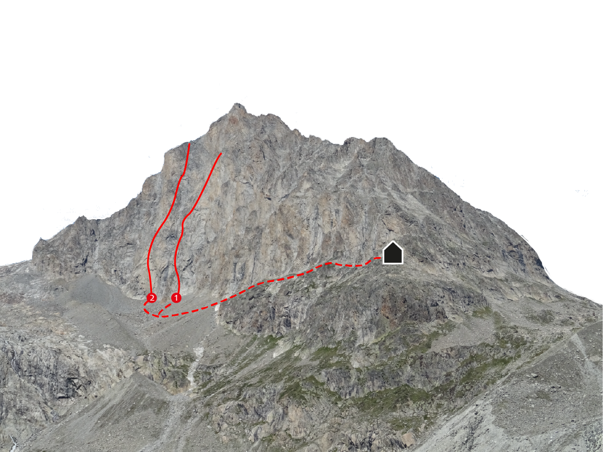

Südwestwand
In der Südwestwand des Jägihorns sind zwei Routen eingerichtet. Beide Touren sind sehr lang und mit 6b+ die schwierigsten Touren dieses Führers.
Zustieg: Von der Baltschiederklause folgt man dem Weg in Richtung Nordwesten. Später verlässt man den Weg und steigt durch das Geröllfeld zum Wandfuss auf.
